Dynamics Queue Admin: the console a queue organization uses to register a loading place,
check drivers in, dispatch vehicles, manage orders and shipper requests, bid on behalf of
shippers, run reports, watch the real-time connection, and finish its security and settings
tasks (dispatch-queue web console, v1.0.0)
Document
UG-1.0.0: End User Guide (dispatch-queue console)
Application
Dynamics Queue Admin: dispatch-queue web console, product version
1.0.0
Intended reader
Queue Organization Admin and Queue Dispatcher staff of a loading place (organization) on
the Dynamics freight marketplace; platform administrators may also sign in for oversight
Languages
The console itself runs in English or Amharic (chosen on the sign-in screen or in
Settings). This guide is written in English.
Screenshots
Authentic live application captures recorded from the active test environment (Queue Org Admin console, phone +251 929257891) embedded from Screenshot/ folder.
Marew Masresha, General Manager, mmarew@gmail.com, 0983222221
Date of preparation
15 October 2026
Date of submission
15 October 2026
Contents
1
Introduction
2
Getting started
3
Signing in
4
Creating and registering a loading place
5
The dashboard
6
The live queue board
7
Check-in
8
Running the queue
9
Orders and shipper requests
10
Bidding on behalf of shippers
11
Reporting and analytics
12
Real-time notifications and connection status
13
Security compliance view
14
Settings
15
Language and appearance
16
Troubleshooting and FAQ
17
Glossary and support contacts
How to read this guide
Each section takes one part of the console and walks you through it with numbered steps.
Captioned high-resolution screenshot figures from the live application are embedded throughout each section. On-screen labels are shown in
the console's English wording; where the same feature is also known by another name, both
are given (for example, the sidebar item labelled Live Queue is the queue
board). The support contacts in §17 are those of Dynamics Transport.
1. Introduction
1.1 What this guide is for
This guide explains how to use Dynamics Queue Admin, the web console that a
loading place uses to run its vehicle dispatch queue on the Dynamics freight marketplace. A
loading place is a queue organization: a customs terminal, factory, cement yard, depot,
mine, farm or port. You start by creating the loading place and signing in, then move on to
checking drivers in, dispatching vehicles to orders, managing orders and shipper requests,
bidding on behalf of shippers, reading reports, watching the live connection, using the
security compliance view, and adjusting settings, language and appearance.
1.2 Who uses the console
Staff of a registered queue organization use the console for their day-to-day work. Two
queue-staff roles cover that work; platform administrators can also sign in when they need
to oversee things or approve an organization.
Role
Role ID
What they do in the console
Queue Organization Admin
11
Owns the loading place: profile and members, queue operations, orders, bidding on
behalf of shippers and reports. Can approve or suspend the organization (queue admins
only).
Queue Dispatcher
12
Runs day-to-day queue operations: checks drivers in, dispatches vehicles, overrides
and removes entries, and handles orders and shipper requests. Cannot open bidding on
behalf of shippers.
Platform Admin / Super Admin
3 / 6
Signs in for oversight: reviews queue organizations, approves, suspends or rejects
them, and views the same operational screens.
1.3 What the console does
Registers a loading place (queue organization) and its location as a queue gate.
Checks drivers into the queue and assigns each one a queue position.
Dispatches waiting vehicles to orders, with override and removal controls.
Creates and manages orders and shipper requests for the loading place.
Opens bidding on behalf of shippers and accepts a driver bid for the owning organization.
Reports on drivers, waiting vehicles, orders and organizations.
Tracks the live queue connection and shows real-time updates.
What the console does not do
This console is one piece of the Dynamics platform. It is not the driver mobile
application and not the shipper application, it does not process payments, and it does not
give you a live GPS feed. When something is missing or switched off, this guide says so
instead of glossing over it. See §14 (settings that are not enabled) and §16
(troubleshooting).
1.4 Before you begin
Your loading place must be registered, and approved by an administrator, before drivers
can be dispatched.
You need a supported modern browser (Chrome, Edge, Firefox or Safari).
You need the mobile number registered to your account to receive a one-time code.
To create an order you need the shipper's phone number, the cargo, the quantity in
quintals, the vehicle type and the pickup and delivery places.
2. Getting started
2.1 The screen layout
Once you are signed in you get a left sidebar, a top bar and a main work area. The sidebar
is where you navigate; it groups everything the organization can do. The exact wording of
those sidebar items is listed below.
Sidebar item
Area it opens
Covered in
Dashboard
Organization overview and the list of loading places you can access
§5
Live Queue
The real-time queue board for a loading place
§6, §7, §8
Orders
Orders and shipper requests, including bidding
§9, §10
Organizations
Manage a loading place: profile, members and approval
§4
Reports
Summary metrics and the organization report list
§11
Security
INSA security compliance view
§13
Settings
Account, language and appearance
§14, §15
Figure 2.1: Dashboard shell — left sidebar navigation, top header with organization selector, and main content area.
2.2 The top bar
Organization selector: switches which loading place the queue board and
orders apply to.
Language selector: switches the interface between English and Amharic
(§15).
Profile / Menu: opens your account area and the sign-out action (§14).
2.3 Your first run-through
Open the console in your browser and sign in with your phone number and one-time code
(§3).
If you have not yet created the loading place, complete
Setup Organization (§4).
Open Live Queue and confirm the organization is selected (§6).
Check drivers in as they arrive at the gate (§7).
Dispatch waiting vehicles to orders, or create a new order first (§8, §9).
On a narrow screen
The console is built desktop-first, but it adapts. Shrink the window and the sidebar
collapses into a menu button, the queue board turns into cards, and panels stack on top of
each other. Every action described in this guide works the same way at any screen size.
3. Signing in
You get in with your phone number and the one-time code (OTP) sent to it. There is no
password and no role picker: your role belongs to your account, so access stays tied to the
number registered to your organization.
3.1 Enter your phone number
Open the console. The sign-in screen appears.
Enter your Ethiopian mobile number. The console validates the international format
+251 followed by nine digits.
Select Sending OTP / Send OTP to request the code.
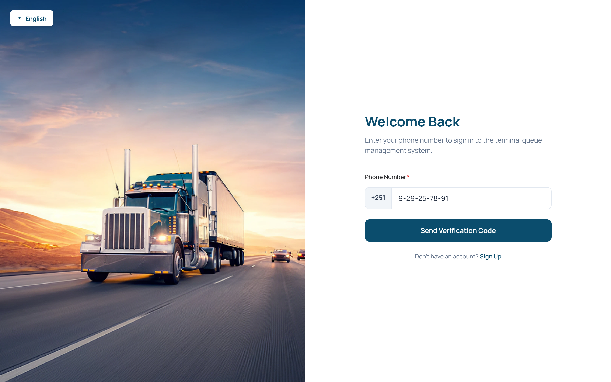
Figure 3.1: Sign-in screen — phone number field with the +251 country code (929257891) and Send OTP button.
3.2 Enter the one-time code
A screen asks for the six-digit verification code sent to your phone.
Type the six digits. The code boxes accept digits only, move focus forward as you type,
and move back when you press backspace. You can also paste the whole code and it is
distributed across the boxes.
When the sixth digit is entered the code is submitted automatically and you are signed in.
If the code does not arrive, wait for the resend countdown to finish (60 seconds), then
choose Resend OTP.
To change the number you started with, use the back arrow.
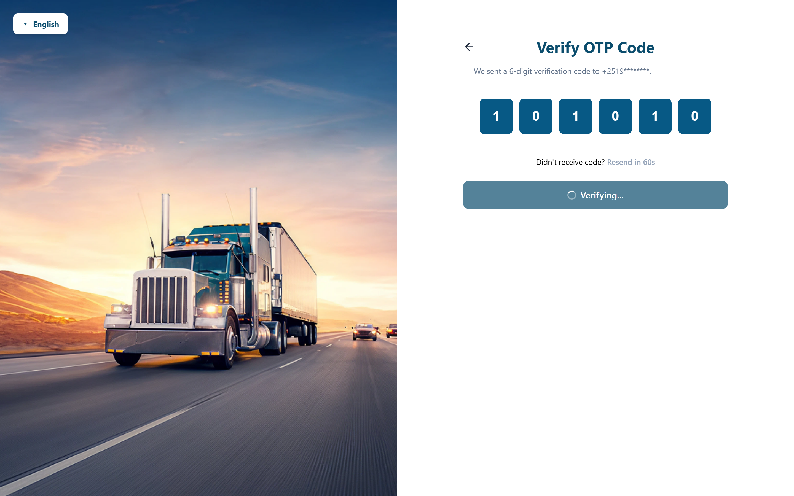
Figure 3.2: OTP verification screen — six-digit code input boxes with verification code (101010) entered and Verify button.
Field / control
Rule
Phone number
Required. Ethiopian international format: +251 plus 9 digits.
Verification code
Required. Exactly 6 digits. Submitted automatically when the sixth digit is entered.
Resend OTP
Available after the 60-second countdown expires; sends a fresh code to the same
number.
3.3 Sessions and signing out
Sign-in establishes a secure, HTTP-only session cookie. No access token is stored in or
exposed to the browser's JavaScript, and there is no separate refresh step.
Session lifetime depends on the role: platform administrators (roles 3 and 6) are signed
out after 24 hours; queue staff (roles 11 and 12) remain signed in for up
to 365 days.
If your session ends, you are returned to the sign-in screen and must request a new code.
To sign out, open your account area or go to Settings → Sign Out (§14).
The code goes to the mobile number on your account. If you change that number, you will
not be able to sign in until the account has been updated to match.
4. Creating and registering a loading place
A loading place is a queue organization: the site whose vehicle queue you manage.
Create one before you touch the queue board, and get an administrator to approve it before
any driver can be dispatched.
4.1 Create the organization
On first sign-in, if your account has no organization yet, the console opens the
Setup Organization screen (also shown as a
Create Organization
dialog from the dashboard).
Enter the organization name (for example, "Addis Freight Terminal").
Choose the organization type from the list below.
Optionally enter a contact phone number for the loading place.
Enter the address and select the matching suggestion from the address search. Selecting a
suggestion records the location's latitude and longitude, and that is the site reference
the queue uses as well as the check-in gate.
Select Create Organization. A new organization starts in
pending approval status.
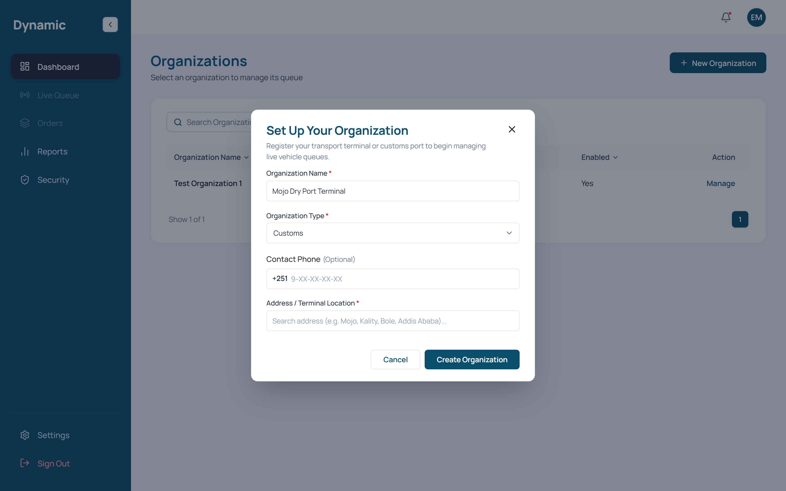
Figure 4.1: Setup Organization dialog — name, business type, contact phone, and geocoded address location search.
Field
Required
Notes
Organization name
Yes
The display name used across the console.
Organization type
Yes
One of the types listed in §4.2.
Contact phone
No
Ethiopian format, +251 plus digits.
Address (with location)
Yes
Chosen from the address search; the selected suggestion supplies the latitude and
longitude that define the site location.
4.2 Organization types
You can pick one of the following loading-place types.
Type (label)
Type (stored value)
Customs
customs
Factory
factory
Cement
cement
Depot
depot
Mine
mine
Farm
farm
Port
port
Other
other
Check-in radius
The check-in gate works from a radius around the organization's location. That radius is
a platform setting, not something you type on the create-organization form, and it
defaults to 15 km. If your operation needs a different radius, ask the
platform administrator to change it.
4.3 Approval statuses
Every organization carries an approval status. You will see it as a badge on the manage page
and in the organization list.
Status
Meaning
Pending
Newly created; awaiting administrator review. The queue is not enabled.
Approved
The organization is enabled and its queue is live.
Rejected
The application was declined by an administrator.
Suspended
An approved organization whose queue has been disabled by an administrator.
4.4 Selecting a loading place to manage
On the Organizations directory (accessible via the navigation sidebar or dashboard),
you can review all registered loading places along with their type, city, approval status, and active queue state.
To begin operating the queue for an approved facility, locate your organization in the table and click Manage.
Facility Details: Review the organization name, business category (such as Customs or Depot), city, and operational status.
Manage Action: Clicking the Manage button selects the organization as the active loading place and opens its live dispatch queue board.
Profile: update the name, type, phone and address/location. Saving a new address updates the site location.
Members: add a member by user identifier and role, then deactivate, reactivate or remove them. Membership itself is the permission, so a lifecycle change takes effect on the member's next request.
Approval (queue administrators only): Approve, Suspend or Reject the organization. Approving turns the queue on; suspending or rejecting turns it off.
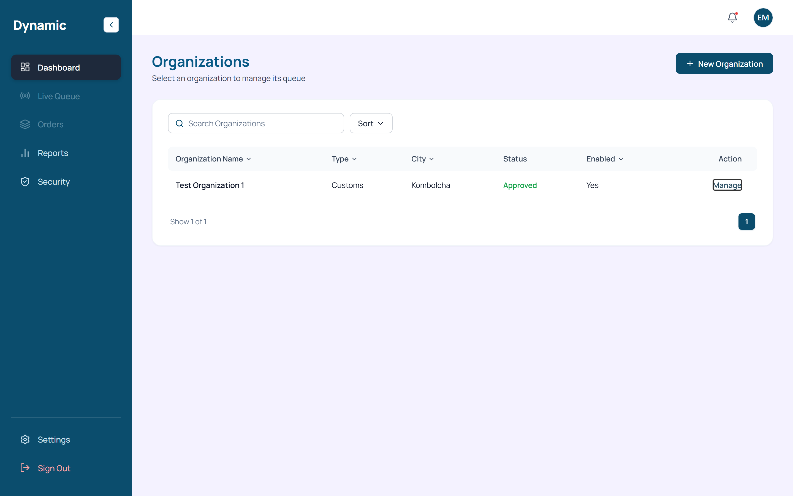
Figure 4.2: Organizations table — selecting an approved loading place with the Manage button to open its queue.
Approval is required before dispatch
No driver can be dispatched until the organization's status reads Approved.
While it is pending, rejected or suspended, treat the queue board as preparation only.
5. The dashboard
The dashboard is the first screen you land on after sign-in. Pick the loading place you
want to work in from here, and read your organization's summary figures off the same page.
5.1 The organization overview
Organization cards: each loading place you can access appears with its
type, name and approval badge. Select one to open its live queue.
Create organization: opens the same create dialog described in §4, for
accounts that can add another loading place.
Summary figures: the overview shows the organization's operating figures,
including drivers, waiting vehicles and orders.
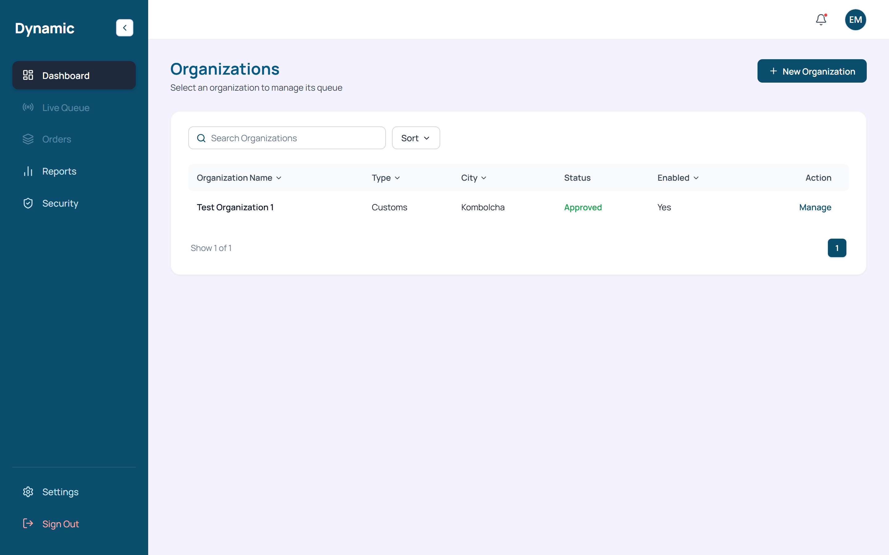
Figure 5.1: Dashboard — active organization list with approval badges and operational summary statistics.
Where the dashboard figures come from
The dashboard and Reports build their summary figures in the console from whatever data
has loaded. They are good enough for watching the day as it runs, but treat them as
working numbers rather than an audited record. See §11.
6. The live queue board
The live queue board (Live Queue) is where the day's work actually
happens. It lists the vehicles sitting in the queue for the selected loading place, grouped
by vehicle type, and gives you the controls to check drivers in and dispatch them.
6.1 The board header
Live / Connecting badge: a coloured badge next to the title tells you
whether the real-time connection is live. See §12.
New Order: opens the create-order dialog (§9).
Manual Check-in: opens the check-in dialog to add a driver to the queue
(§7).
6.2 Vehicle-type cards
You get one card per vehicle type that has drivers in the queue, plus a card for all
drivers. Each vehicle-type card shows the number of waiting vehicles and a
Dispatch button.
Dispatch is enabled only when there is at least one waiting vehicle for
that type. When the waiting count is zero the button is disabled.
The All Drivers card lists every driver in the queue regardless of
vehicle type.
Select a card to open the queue table for that vehicle type.
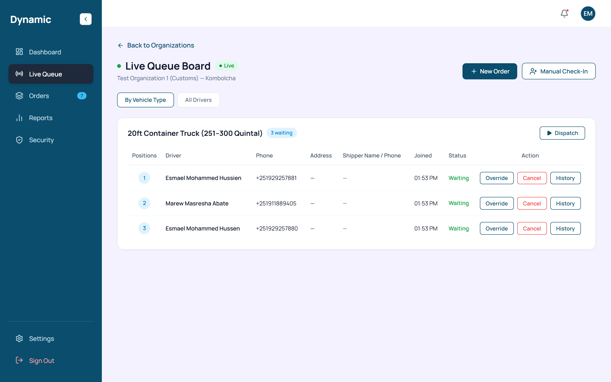
Figure 6.1: Live queue board — vehicle-type queue cards, real-time waiting counts, Live badge, and Check In / Dispatch controls.
6.3 The queue table
Each driver in the queue appears in the table with the position they were given. On a
narrow screen the table turns into stacked cards carrying the same information.
Column
Shows
Positions
The driver's place in the queue (FIFO position).
Driver
The driver's name.
Phone
The driver's phone number.
Address
The driver's last known address/place.
Shipper Name / Phone
The shipper associated with the driver's order, if any.
Joined
When the driver joined the queue.
Status
The driver's current queue status (see §8.4).
Action
Row actions such as dispatch, override, remove and history.
7. Check-in
Check-in is how a driver gets into the queue. On the queue board, select
Manual Check-in to open the dialog.
7.1 Checking a driver in
On the live queue board, select Manual Check-in.
Search for the driver. The search covers the driver directory and the current queue, and
matches on the details shown for each driver (such as name and phone).
Select the driver from the results.
Leave the queue number blank and the driver goes to the end of the queue under the usual
first-in, first-out (FIFO) rule. Type a number only when you want them placed at a
specific position.
Confirm the check-in. The driver appears on the queue board with their position.
Leave the queue number empty and the platform hands out the next FIFO position. Only type
a number when you deliberately want a driver at a particular spot. If you get it wrong,
the override action (§8.3) is there to fix the position later.
8. Running the queue
Here is the routine work on the queue board: dispatching, overriding a position, removing an
entry, and looking back at an entry's history.
8.1 Dispatching a vehicle
On the queue board, find the vehicle-type card with waiting drivers.
Select Dispatch (enabled only when at least one vehicle is waiting).
In the dispatch dialog, choose the order to dispatch the front waiting vehicle to. The
dialog shows a summary of the shipper request for the selected order.
Confirm. The vehicle is dispatched and its status updates to match.
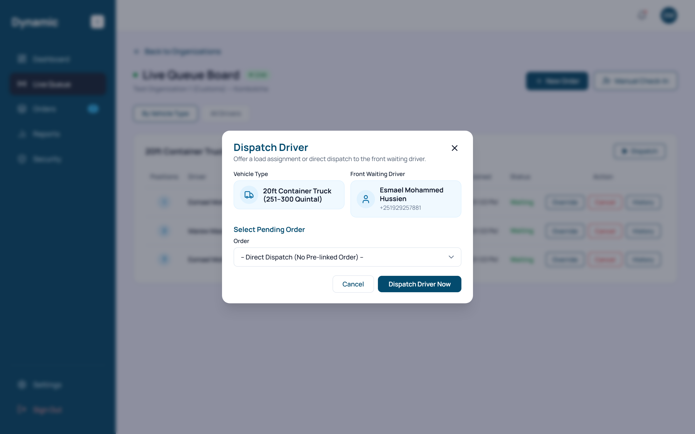
Figure 8.1: Dispatch dialog — front waiting driver assignment, target order selection, and cargo matching.
8.2 Dispatch is tied to waiting vehicles
When a vehicle-type card shows a waiting count of zero, its Dispatch
button is greyed out. Check a driver in first (§7), or move to a different vehicle-type
card that still has waiting vehicles.
8.3 Overriding a position
Open the row action for the driver and choose Override.
Enter the new queue number and a reason for the change.
Confirm. The driver moves to the new position and the change is recorded.
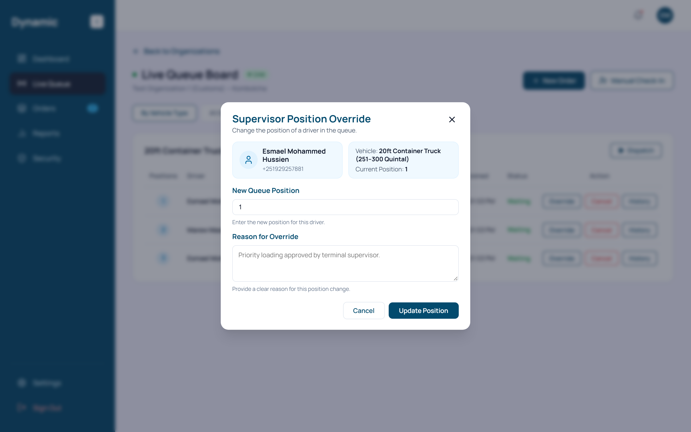
Figure 8.2: Supervisor Override dialog — manual queue position adjustment and audit reason field.
8.4 Removing an entry
Open the row action for the driver and choose Remove.
Enter a reason when prompted and confirm.
The driver is removed from the queue, and the reason goes to the affected party over the
live connection.
Removal reasons
Whatever you type as the reason is broadcast to the queue's live listeners. Keep it clear
and factual so the driver's app shows an accurate explanation.
8.5 Entry history
Every queue entry keeps a history you cannot edit. Open the row action and choose
History to see the recorded before-and-after snapshots for the entry, such
as its original position and any override applied later.
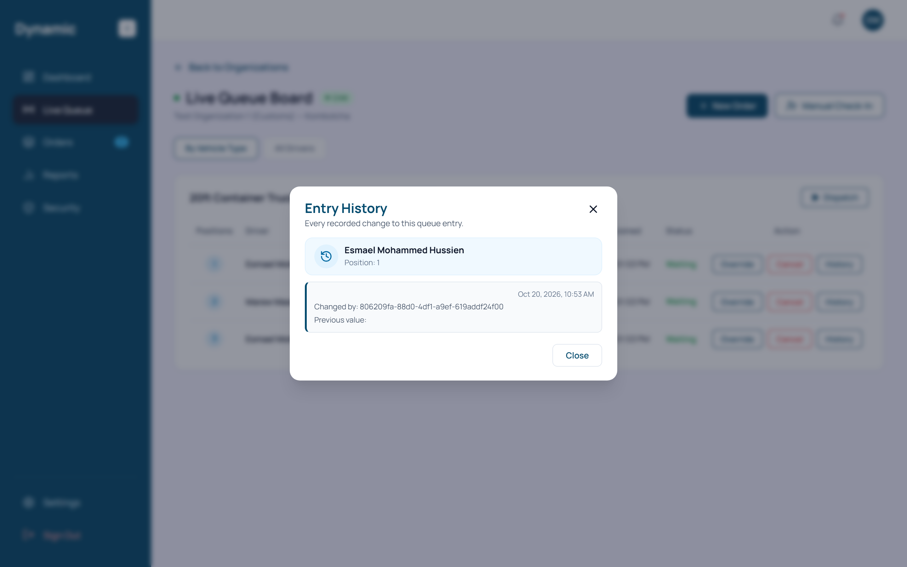
Figure 8.3: Entry History dialog — chronologically audited state transitions and before/after queue snapshots.
8.6 Queue statuses
Status
Meaning
Waiting
In the queue, waiting for dispatch.
Offered
An order has been offered to the driver.
Loaded
The vehicle has been loaded.
Removed
The entry was removed from the queue.
Completed
The vehicle's job is complete.
9. Orders and shipper requests
The Orders area holds the orders and shipper requests for your loading
place. This is where you create new orders and check driver requests against a shipper's
request.
9.1 Creating an order
On the queue board select New Order, or use the create action in the
Orders area.
Choose the Request Type: individual target (a specific vehicle
slot) or company target (open to carriers).
Choose the Dispatch Mode: FIFO Queue (auto-offer to the
front waiting driver) or Open for Bidding (a biddable job for carriers).
Enter the shipper's phone number and choose the vehicle type.
Enter the cargo details: item, quantity in quintals, cost, number of vehicles, and the
shipping and delivery dates. Quantity per vehicle cannot exceed the selected vehicle
type's carrying capacity.
Enter the origin and destination by searching the address field and selecting the matching
suggestion, which records the coordinates for each place. The origin defaults to the
loading place's location.
Select Create Order. The order is created and offered to the queue.
Field
Notes
Request Type
Individual target or company target.
Dispatch Mode
FIFO Queue, or Open for Bidding (see §10).
Shipper phone
Ethiopian format, +251 plus digits.
Vehicle type
Selects the queue lane the order is dispatched on.
Cargo and quantity
Capped by the selected vehicle type's capacity.
Cost and dates
Shipping and delivery dates; the shipping date cannot be in the past.
Origin / destination
Address search records place names and coordinates.
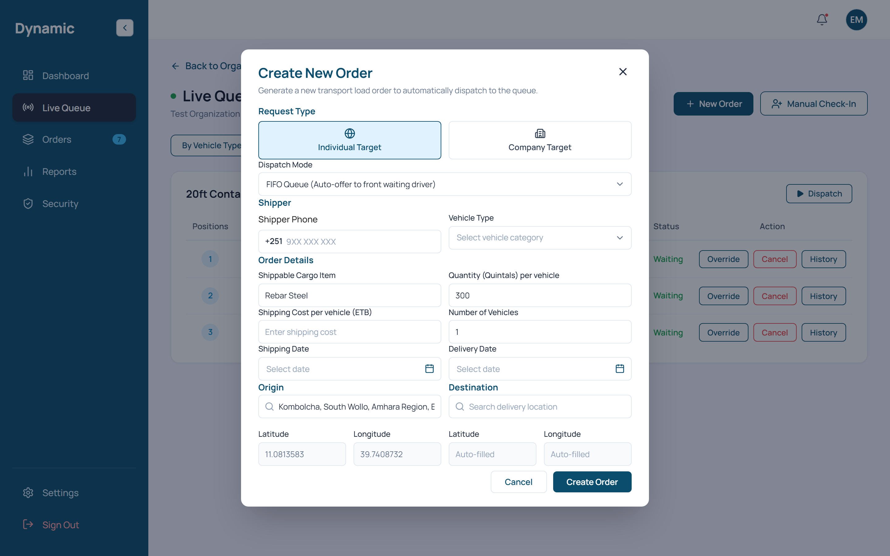
Figure 9.1: Create Order dialog — dispatch mode, shipper selection, vehicle specification, and geocoded route coordinates.
Large orders default to company target and bidding
When the number of vehicles for an individual order is set above nine, the console
switches the request to a company target and turns on open bidding by itself. That is
deliberate: volumes that big are offered to carriers rather than a single queue slot.
9.2 The orders list
Every order appears with its identifier, shipper, vehicle type, cargo, route, quantity and
cost. Orders spanning several vehicles are grouped into a single batch row that summarises
the vehicles and their journey stages; expand it to see each vehicle.
Journey stage: each order shows its current stage (for example,
accepted, loading, in transit, completed). See §17 for the journey-status glossary.
Bidding indicator: orders that are open for bidding are marked as such.
Figure 9.2: Orders list — multi-vehicle batch tracking rows, assigned vehicles, and journey progression stages.
9.3 Shipper requests and driver acceptance
Open a shipper's request to see its overview (cargo, route, dates and status).
If there are driver requests against it, each is listed with the driver's details and
offer.
Select Accept on a driver request to accept that driver for the shipper
request. Repeat for other drivers as needed.
Use View All Orders to open the full orders list filtered to that
shipper.
Once an order is open for bidding, carriers and drivers start sending offers. You review
those offers on the shipper's behalf and accept the driver you judge best for the job.
10.1 Who can open bidding
Bidding is restricted
Only the Queue Organization Admin (role 11) gets the bidding control,
and only for an order belonging to their own organization. The
Super Admin (role 6) gets it too. A Queue Dispatcher
(role 12) never sees the control, and the platform refuses the action if one is
attempted. Dispatchers can still run the queue and orders; they just cannot open bidding
on a shipper's behalf.
10.2 Opening an order for bidding
In the Orders area, select the order you want to open for bidding.
Use the bid toggle to turn bidding on for that order.
The toggle itself is per order: an order either has bidding approved or not. Turning it on
publishes the order as a biddable job for carriers.
10.3 Reviewing offers and accepting a driver
Open the order's driver bids.
Use the toolbar to search by driver name, phone or plate, choose a
sort order, and set a display limit.
Compare the offers. Each one shows the driver's details, their offer and, where it is
available, distance and vehicle information.
Select Accept on the offer you want. The console accepts that specific
driver's bid.
Sort option
Orders offers by
Nearest Distance First
Closest driver to the pickup.
Lowest Offer First
Lowest offer amount.
Highest Offer First
Highest offer amount.
Driver Name (A–Z)
Driver name, alphabetically.
Default Order
The platform's default ordering.
Figure 10.1: Driver Bids board — filter and sort toolbar, incoming driver bid offers, and acceptance controls.
10.4 Bid statuses
Status
Meaning
Selected
The bid was accepted for the order.
Not selected
The bid was reviewed but not accepted.
Withdrawn
The driver withdrew the bid before a decision.
Expired
The bid is no longer actionable.
Accepting requires the exact bid
The console accepts a bid only when it can pin down the exact driver and decision from
the bid list it has loaded. When it cannot, you get a clear error instead of a guess
about which driver to take. Reload the bids and try again if that happens.
11. Reporting and analytics
The Reports area sums up activity for the loading place with a few key
figures, a couple of simple charts, and a list of organizations you can search.
11.1 Key figures
KPI card
Shows
Total Driver
The number of drivers known to the organization.
Waiting Now
The number of vehicles currently waiting in the queue.
Orders Now
The number of active orders.
Total Organizations
The number of loading places in the report scope.
11.2 Charts and the organization list
Donut chart: a proportional view of the current distribution (for
example, waiting by category).
Monthly bar chart: activity over recent months.
Organization report list: a list of organizations with search, sortable
columns and pagination (five rows per page).
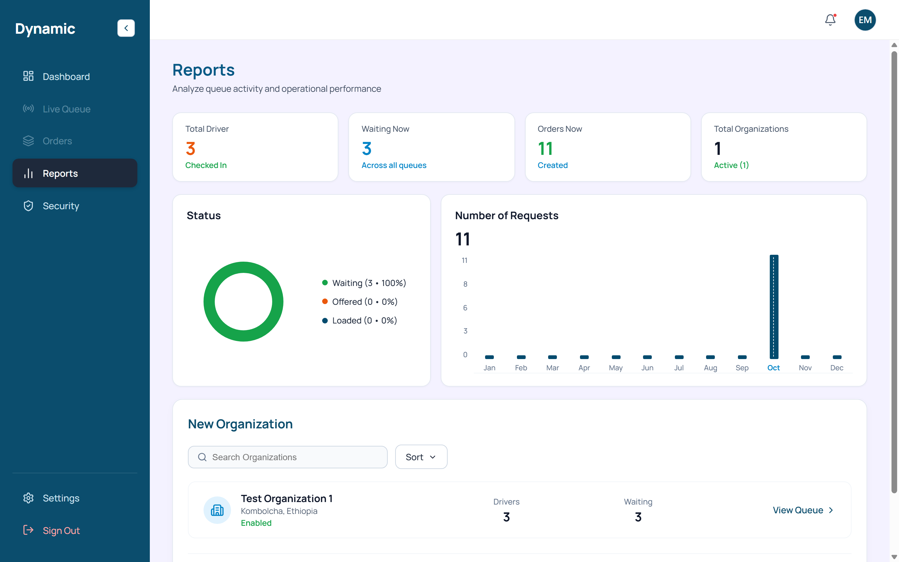
Figure 11.1: Reports page — operational KPI metrics, fleet distribution donut chart, and monthly volume bars.
How the figures are produced
This page works out its figures and charts in the console from the data it has loaded;
there is no separate analytics service behind them. That makes them useful for
operational monitoring. A built-in PDF export of these reports is not confirmed, so use
your browser's print function if you need a printable copy, and keep treating the figures
as working values.
12. Real-time notifications and connection status
The console holds a live connection to the platform, so queue changes such as check-ins,
dispatches, removals, bids and organization updates show up without you refreshing the page.
12.1 The live connection
The queue board shows a Live badge when the real-time connection is open,
and a Connecting badge while it is re-establishing.
Queue staff (roles 11 and 12) receive queue events through a shared queue-organization
channel, so both administrators and dispatchers see the same live updates.
When the connection drops, the console shows a disconnected state and automatically
retries. It makes up to five reconnection attempts with a short delay
between them (starting at about 1.5 seconds and backing off up to about 5 seconds).
If the retry delivers the underlying data again, the board returns to
Live and refreshes the affected lists.
Figure 12.1: Live Queue connection indicator — real-time WebSocket connection badge and live synchronization state.
12.2 What triggers a live update
A driver checking in or being removed from the queue.
A vehicle being dispatched or its position overridden.
An order or shipper request changing, or a bid being placed or accepted.
An organization being approved, updated or its members changing.
If the badge stays on Connecting
Check your network and reload the page. If your session has expired, the console closes
the connection on purpose and signs you out; sign in again with a one-time code (§3). See
§16 for more.
13. Security compliance view
The Security area shows the console's INSA security compliance
information. Think of it as a reference and tracking view: opening it does not change how
secure the running system is.
13.1 The tabs
Tab
Shows
Overview
A summary of the compliance position and counts.
Requirements
The INSA requirements grouped by the five focus areas.
Vulnerabilities
The tracked vulnerabilities and their status.
Testing
The security test checklist with pass/fail tracking.
13.2 Tabs, requirements and testing
The standard is organised into five focus areas (numbered 2.1 to 2.5). Each one comes
with a set of requirements and tests, plus a set of tracked vulnerabilities.
In the Testing tab you can mark each test as passed or failed. The counts
and progress shown on the page are computed from those marks.
Where test tracking is stored
Pass/fail marks you record in the Testing tab are saved in this browser's local storage.
They survive reloads on that same browser and device, but they are not shared with other
users, browsers or devices. Selecting a test's active status again clears it, and a test
with no mark reads as untested. Treat the marks as your own working checklist for this
submission.
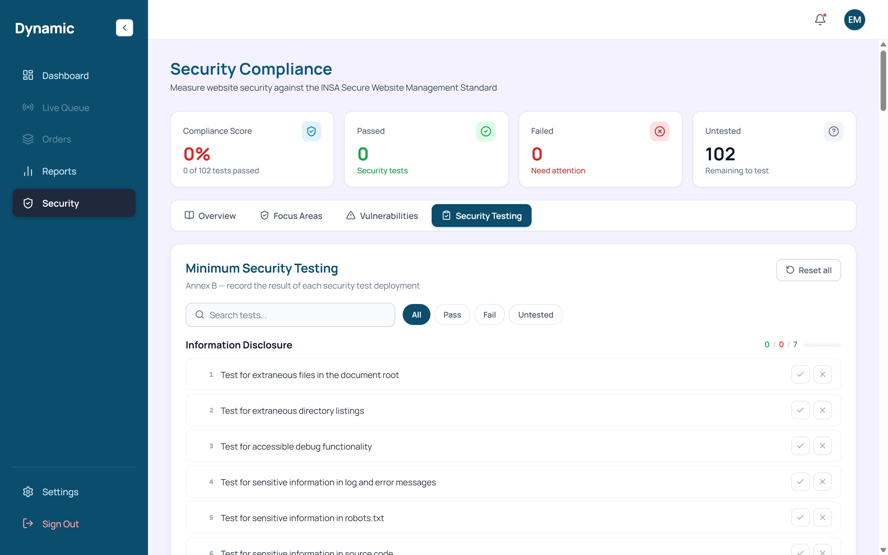
Figure 13.1: Security Compliance view — Testing tab with 102 INSA checklist items, pass/fail controls, and audit score.
14. Settings
Settings is where you handle your account, language and appearance for the
console.
14.1 What you can change
Language: switch the interface between English and Amharic (§15).
Appearance: switch between light and dark theme (§15).
Sign Out: end your session and return to the sign-in screen.
14.2 Account options that are not enabled
Disabled in this release
Profile editing, notification preferences and two-factor authentication do appear in the
account area, but they are not enabled in this release and each carries
an explanatory label. Nothing sits behind them on the server, so no change you make there
is ever saved. Do not rely on them to update your account; ask the platform administrator
instead.
14.3 Danger zone
The danger zone holds an account-deletion action behind a confirmation dialog. It removes
the whole account, so reach for it only when you genuinely want the account gone.
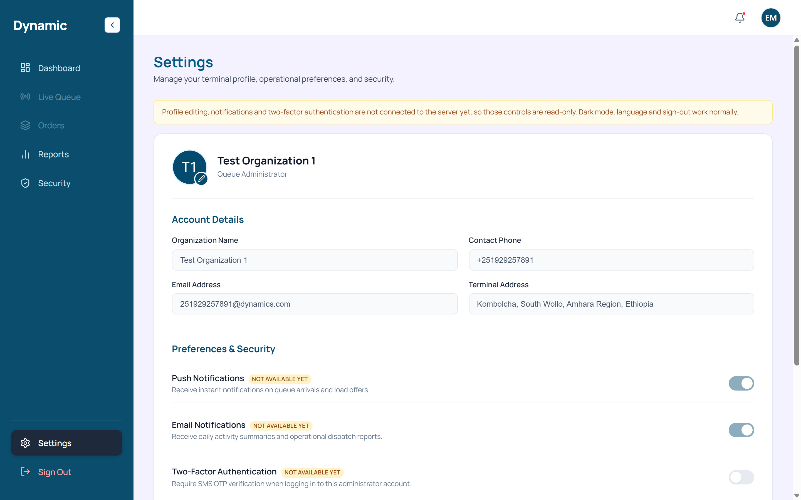
Figure 14.1: Settings page — language and appearance preferences, user session management, and organizational settings.
15. Language and appearance
15.1 Language
The console runs in English or Amharic. Pick your
language on the sign-in screen or in Settings.
Your choice is saved in the browser and applied the next time you open the console on
that same browser and device.
15.2 Appearance
There is a light and a dark theme. The theme control
lives in Settings.
Your theme choice is saved in the browser and applied the next time you visit on that
same browser and device.
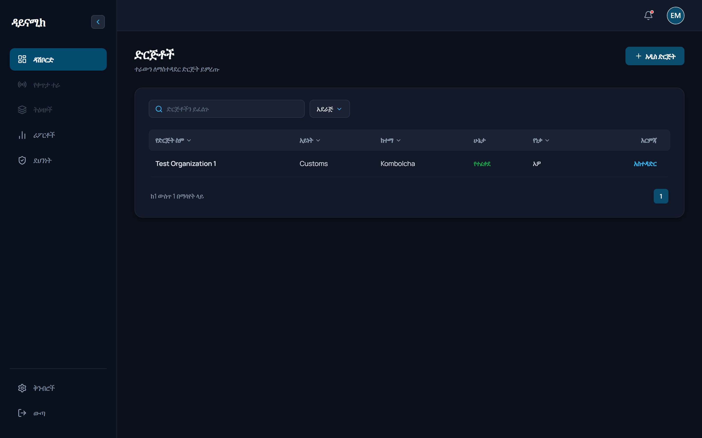
Figure 15.1: Localization and theme — console displayed in dark theme with complete Amharic interface.
Saved per browser
Language and theme choices are kept in the browser, so they belong to that browser and
device. They do not follow your account to another one.
16. Troubleshooting and FAQ
16.1 Common situations
Symptom
What to do
I did not receive the one-time code.
Wait for the 60-second countdown and select Resend OTP. Confirm the
number is correct for your account.
I am signed out unexpectedly.
Administrator sessions last 24 hours. Sign in again with a fresh code; queue staff
sessions last much longer.
The Dispatch button will not activate.
That vehicle-type card has no waiting vehicles. Check a driver in (§7) or choose a
card with waiting vehicles.
I cannot find the bidding control.
Bidding is only available to the queue administrator (and Super Admin) for their own
organization; dispatchers do not see it (§10.1).
The Live badge stays on Connecting.
Check your network, then reload. If your session expired you will be returned to the
sign-in screen (§12).
My theme or language reset.
These are saved per browser and device; they do not follow your account. Set them
again in Settings (§15).
My profile or notification changes do not save.
Those options are disabled in this release and have no server endpoint (§14.2).
The reports figures look different from another screen.
The console works these figures out from whatever data it has loaded, so treat them
as working values (§11). Refresh to pull the latest data.
16.2 Frequently asked questions
Can I sign in with a username and password? No. Access is by phone number
and one-time code only.
Can a dispatcher open bidding? No. Only the queue administrator for the
owning organization (and the Super Admin) can.
Where is my check-in radius set? It is a platform setting (default 15
km), not a field on the organization form (§4).
Are the security checklist marks shared with my team? No. They are stored
in your browser only (§13).
17. Glossary and support contacts
17.1 Glossary
Term
Meaning
Loading place / Queue organization
The site whose vehicle queue this console manages (for example, a customs terminal,
factory, depot, mine, farm or port).
Queue Organization Admin
Role 11: owns the loading place and can approve/suspend it.
Queue Dispatcher
Role 12: runs the queue but cannot manage bidding.
Check-in
Adding a driver to the queue and assigning a position.
FIFO
First-in, first-out: the default order in which waiting vehicles are dispatched.
Dispatch
Sending the front waiting vehicle of a vehicle type to an order.
Override
Deliberately changing a driver's queue position.
Shipper request
A shipper's request for carriage, which queue staff can accept drivers against.
Bidding
Carriers offering on an order; queue staff accept the chosen offer.
Offer / Bid
A carrier's proposal (price and details) for a biddable order.
OTP
The six-digit one-time code sent to your phone to sign in.
Journey status
The stage of a dispatched vehicle's job, from accepted through loading, in transit and
completed.
17.2 Support contacts
Channel
Detail
Support email
mmarew@gmail.com
Support telephone
0983222221
Support hours
Monday–Friday, 09:00–17:00 (East Africa Time); messages outside these hours are answered the next working day
Escalation / account issues
Marew Masresha, General Manager, Dynamics Transport, mmarew@gmail.com, 0983222221
Document control
This End User Guide (UG-1.0.0) covers Dynamics Queue Admin version
1.0.0 as it is built in the submitted release. It goes out together with
the Software Requirements Specification (SRS), the Software Design Description (SDD), the
Technical Design / Low-Level Design (TDD/LLD) and the Security Documentation.
Item
Value
Document identifier
UG-1.0.0: End User Guide (dispatch-queue console)
Product and version
Dynamics Queue Admin web console, v1.0.0
Coverage
Loading-place registration, dashboard, live queue board, check-in, dispatch and queue
running, orders and shipper requests, bidding on behalf of shippers, reports,
real-time connection, security compliance view, settings, language and appearance
Related documents
SRS, SDD, TDD/LLD, Security Documentation
Items to complete before submission
All 20 authentic console screenshots captured and embedded with numbered captions from the Screenshot/ folder. Submitting entity, contact person, support contacts, escalation contact and dates are completed.